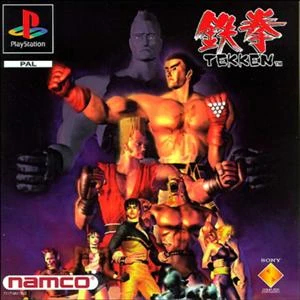

Street Fighter
vdzdvxsdgdszcdzcdszcdsddasfvgsxdfxsdfsdsedsafvdsgfdfsewafsdfsdsedgsdfgsdfegdsdasdasfghdeda
Mortal Kombat
TEKKEN
HISTORIA
La historia principal del juego gira en torno a la familia "Mishima" y sus luchas por el control de su empresa, el imperio financiero Mishima Zaibatsu, del cual Heihachi Mishima, un renombrado pero despiadado maestro de artes marciales, es el presidente y jefe de la misma (al menos desde el primer Tekken 1). El Tekken (que se conoce también por The King of Iron Fist Tournament, traducido seria algo así como "El Rey del Torneo Puño de Hierro") es el nombre que se la da al torneo de lucha que la familia Mishima organiza cada cierto tiempo, para así elegir al sucesor de la fortuna de la compañía Mishima Zaibatsu nombrando al ganador de dicho torneo Tekken.

En un principio su heredero iba a ser su hijo Kazuya Mishima, pero ya desde el nacimiento de Kazuya, su padre Heihachi pensaba que su hijo no seria lo suficientemente fuerte para hacer frente a la enorme responsabilidad de llevar el imperio, así que Heihachi, como maestro de artes marciales y siendo un hombre cruel, estricto y severo, dio duros entrenamientos a su hijo ya desde su infancia para fortalecerlo, sometiéndolo además a una prueba mortal que consistió en arrojar a Kazuya por un abismo, pero de lo cual este ultimo sobrevive debido a que Kazuya hace un pacto con el Diablo durante su caída, el cual lo poseyó cambiando la propia estructura genetica de Kazuya, que le insertó un "Gen Diabólico" en su cuerpo a cambio de seguir viviendo, pero sufriendo no obstante una herida mortal en el pecho que cicatriza como una larga herida que casi dividía su cuerpo, símbolo a su vez de su pacto diabólico. Kazuya, tras ganar el primer torneo Tekken derrotando a Heihachi, arrojo a Heihachi por un abismo para deshacerse de él.